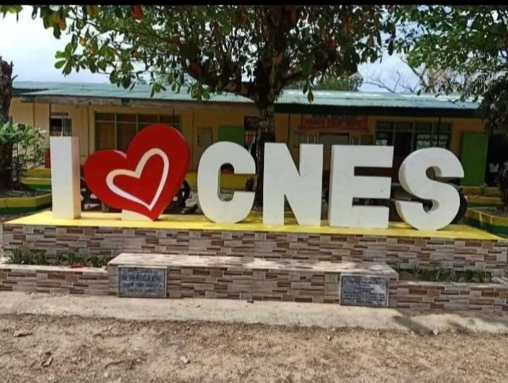

My Elementary School

Mission and Vision
Mission:To protect and promote the right of every Filipino to quality, equitable, culture-based, and complete education, encouraging a learner-centered environment.
Vision:To produce Filipinos who passionately love their country and whose values and competencies enable them to realize their full potential and contribute meaningfully to nation-building.
- Perfect attendance
- best in Behavior
- whit honnors
- atlits
School Hymn
Cagayan, my valley home is dear to me, Though from her my footsteps far stray, Over mountains, plains, beyond the deep blue sea I shall love her ever be where'er 1 may Chorus Cagayan, O smiling land of beauty Cagayan, my heart clings unto thee, Though from thee my footsteps far away may #ray I shall love thee ever be where'er 1 may Subtler charms and beauty other skies my yield Other lands a moment may allure, But my turn to Cagayan will be revealed That my love for her shall ever more endure Chorus Cagayan, O smiling land of beauty Cagayan, my heart clings unto thee, Though from thee my footsteps far away may stray I shall love thee ever be where'er 1 may III "Tis not riches of the soil, indeed, that hold me to her But treasures of the soul, virtues humble, Loyal hearts with courage hold, Far outweigh The earthly says the Holy Scroll Chorus Cagayan, O smiling land of beauty Cagayan, my heart clings unto thee, Though from thee my footsteps far away may stray shall love thee ever be where'er I may IV May her sons and daughters evermore aspire To be faithful, lovely, good and true Thrifty, peaceful learned, may they never fire Standing for the right though for the right be few Chorus Cagayan, O smiling land of beauty Cagayan, my heart clings unto thee, Though from thee my footsteps far away may stray I shall love thee ever be where'er I may